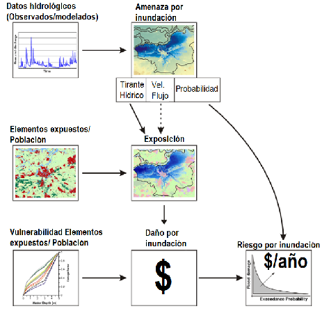

Introducción y antecedentes¶
La infraestructura vial y el riesgo en América Latina¶
La infraestructura de transporte es la columna vertebral del desarrollo económico y social de América Latina y el Caribe. Facilita el comercio, la conectividad y el acceso a servicios esenciales. Sin embargo, la región enfrenta una alta exposición a desastres socionaturales —huracanes, tormentas tropicales, terremotos, deslizamientos e inundaciones— que no solo causan pérdidas de vidas y daños económicos, sino que interrumpen gravemente las redes viales, aíslan comunidades y obstaculizan la respuesta a emergencias.
Mejorar la resiliencia de la infraestructura vial no es opcional: es una necesidad urgente para proteger vidas, salvaguardar inversiones y asegurar la continuidad del desarrollo sostenible frente a un clima cambiante. En ese contexto, disponer de metodologías y herramientas que permitan evaluar y gestionar el riesgo de manera proactiva se vuelve fundamental para los países de la región.
El Blue Spot Analysis original (BSA 1.0)¶
El enfoque conocido como Blue Spot Analysis fue desarrollado originalmente por el Danish Road Directorate (DRD), a través de su centro técnico Danish Road Institute (DRI), en el marco del proyecto SWAMP (Storm WAter prevention – Methods to Predict damage from the water stream in and near road pavements in lowland areas), ejecutado a principios de los años 2000.
Su objetivo central fue identificar sistemáticamente los segmentos viales con mayor probabilidad de inundación y consecuencias significativas, bajo escenarios de precipitación intensa actuales y futuros. La metodología se estructuró en tres niveles jerárquicos:
- Identificación de depresiones naturales en modelos digitales de elevación (DEM).
- Análisis de sensibilidad a lluvias extremas mediante simulaciones GIS.
- Modelación hidrodinámica detallada (1D/2D) para estimar profundidad y dinámica de escorrentía superficial en puntos críticos.
Esta arquitectura modular permite reducir progresivamente el universo de análisis —de toda la red vial nacional a los tramos prioritarios— e integrar criterios de adaptación al cambio climático. El modelo fue adoptado por agencias viales de Suecia y los Países Bajos, consolidándose como práctica de referencia para la planificación vial resiliente en Europa (Danish Road Directorate, 2005; European Environment Agency, 2013).
Adopción y ampliación por el BID¶
A partir de esta metodología, el Banco Interamericano de Desarrollo (BID) desarrolló un enfoque complementario que amplía la aplicación conceptual del BSA original. El BID incorporó no solo el riesgo de inundaciones, sino también amenazas de origen hidrometeorológico y geofísico, orientando la herramienta hacia la toma de decisiones sobre priorización de inversiones en infraestructura vial, desde una perspectiva económica y funcional.
La primera aplicación del BSA en América Latina se realizó en República Dominicana, sentando las bases para la versión actualizada. De esa experiencia emergieron oportunidades de mejora en términos de escalabilidad, facilidad de acceso a datos y participación de usuarios externos al BID.
Hacia el BSA 2.0: un nuevo paradigma metodológico¶
El BSA 2.0 nace como respuesta directa a esas oportunidades de mejora y a la necesidad identificada en otras regiones de replicar el análisis en sus portafolios de manera dinámica y participativa. Su desarrollo es liderado por la División de Transporte (INE/TSP) del BID, con el acompañamiento de:
- La División de Cambio Climático (CSD/CCS), que promueve la resiliencia climática como componente transversal.
- La División de Gestión de Riesgo de Desastres y Adaptación Climática (CSD/DRM), que aportó la conceptualización del módulo de riesgo multiamenaza.
Evolución conceptual de la evaluación de riesgo¶
El BSA 2.0 se inscribe en una evolución más amplia del campo de análisis de riesgo de desastres:
| Período | Hito conceptual |
|---|---|
| ~1700 | Primeros sistemas de seguros colectivos (Gran Incendio de Londres, 1666) |
| Años 60 | Modelos de inundación del Cuerpo de Ingenieros del Ejército de EE. UU. (USACE) y análisis sísmico probabilista de Cornell (1968) |
| 1974 | Gilbert White integra decisiones humanas y fenómenos naturales en el análisis de riesgo |
| Años 80 | Funciones de daño y curvas de pérdida en estudios de inundación (UNDRO, Parker, Smith & Ward) |
| 1992 | Huracán Andrew impulsa el modelado catastrófico privado (RMS, AIR Worldwide) |
| 2004 | Merz y Thieken sistematizan el análisis probabilista de riesgo por inundación con tres componentes: amenaza, exposición, vulnerabilidad |
| 2015 | El Global Assessment Report (UNISDR) aplica enfoque probabilista a más de 140 países |
| Actualidad | IA y aprendizaje automático para predicción de amenazas e identificación automática de exposición |
El BSA 2.0 retoma el marco de Merz y Thieken (2004) y lo adapta a los contextos operativos de la región, adoptando un modelo probabilista simplificado que estima la Pérdida Anual Esperada (PAE) mediante interpolación entre niveles de amenaza discretos —el dato más comúnmente disponible en los países de ALC— en lugar de catálogos exhaustivos de eventos simulados estocásticamente.

Figura 1. Esquema metodológico general de la Evaluación Probabilista de Riesgo por inundación.
Fuente: Merz & Thieken (2004), reproducido en Concept Report BSA 2.0 (BID, 2025).
Alineación con marcos institucionales del BID¶
El diseño del BSA 2.0 es coherente con la Metodología de Evaluación del Riesgo de Desastres y Cambio Climático del BID (2019), que propone una aproximación gradual en cinco pasos secuenciales. El BSA 2.0 puede modular su aplicación desde una evaluación exploratoria a gran escala (paso 1) hasta una estimación detallada con medidas de intervención (pasos 4 y 5), ajustando el alcance técnico al contexto institucional y a los recursos disponibles.
Retos actuales y proyección futura¶
Entre los principales retos reconocidos para el BSA 2.0 se encuentran:
- Disponibilidad de datos: los inventarios viales, modelos de amenaza y funciones de vulnerabilidad presentan calidad y cobertura variable entre países.
- Capacidades institucionales: la operación sostenida de la plataforma requiere equipos técnicos con formación en SIG, hidrología y gestión de riesgo.
- Escalabilidad y participación: la plataforma debe permitir a los usuarios nacionales actualizar datos de entrada y ejecutar sus propios análisis.
La incorporación creciente de inteligencia artificial —para predicción de amenazas, identificación automática de exposición y optimización de decisiones— abre la posibilidad de evolucionar el BSA 2.0 hacia esquemas híbridos que combinen modelos probabilistas clásicos con componentes de IA, ampliando su capacidad predictiva y su aplicabilidad en entornos de alta incertidumbre (Camps-Valls et al., 2024).
Para entender cómo el BSA 2.0 responde a estos retos, véase Propósito y alcances.